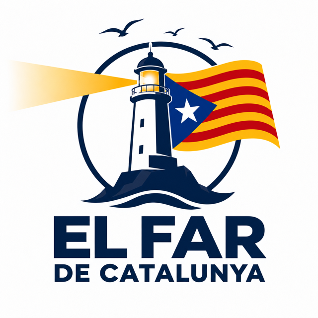

Autonomia local
Organitzacions locals amb capacitat per definir propostes i respondre a les necessitats del seu municipi.
EL FAR DE CATALUNYA
Catalunya es construeix amb persones lliures, una llengua viva i municipis amb veu pròpia.
Coneix el projecte
01 / EL PROJECTE
El Far de Catalunya és un projecte polític de centre, amb vocació social i liberal, compromès amb la independència de Catalunya.
Defensem una democràcia arrelada al territori: amb participació ciutadana, responsabilitat dels representants i institucions al servei de les persones.
Volem unir llibertats individuals i justícia social. Una economia que permeti emprendre i prosperar, amb regles que corregeixin els abusos i uns serveis que garanteixin oportunitats.
02 / ALLÒ QUE DEFENSEM
Els fonaments d’una Catalunya lliure, democràtica i socialment responsable.
Defensem que Catalunya decideixi lliurement el seu futur polític i disposi d’institucions pròpies amb plena capacitat de govern. La participació ciutadana i el compromís democràtic en són la base.
El català és la llengua nacional i el punt de trobada de la vida col·lectiva. En defensem l’ús normal a l’escola, a les institucions, a la feina i al carrer, i la condició de llengua oficial de la Catalunya independent.
Defensem la llibertat d’expressió i de consciència, la laïcitat de les institucions i la igualtat davant la llei. Els drets de les persones, sense discriminació, han de guiar l’acció pública.
Una economia de mercat amb iniciativa i competència, regulada per corregir injustícies. Volem serveis de salut i educació accessibles i de qualitat, protecció social i oportunitats reals per a tothom.
L’accés a l’habitatge, la seguretat i el respecte de les normes comunes són condicions d’una vida digna. Defensem una immigració planificada d’acord amb la feina, l’habitatge i els serveis disponibles, amb integració lingüística, drets i deures compartits.
Defensem la limitació de mandats, la transparència i els mecanismes de revocació democràtica. Representar la ciutadania és una responsabilitat temporal que exigeix escoltar, explicar i respondre.
03 / DES DELS MUNICIPIS
Les decisions guanyen sentit quan es prenen a prop de les persones que les viuen.
Organitzacions locals amb capacitat per definir propostes i respondre a les necessitats del seu municipi.
Compartir experiències i treballar plegats des de les comarques, respectant la diversitat del territori.
Escoltar el veïnat, debatre les prioritats i retre comptes de les decisions. Una política que es pugui tocar de prop.
04 / PARTICIPA
Què canviaries al teu municipi? Quines propostes voldries aportar al projecte?
Volem escoltar persones amb idees i ganes de contribuir. Escriu-nos per demanar informació o fer-nos arribar les teves propostes.
informacio@elfardecatalunya.cat